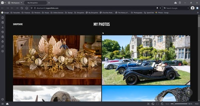
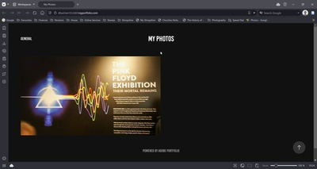
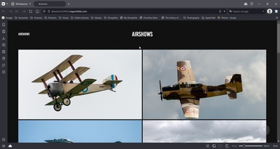
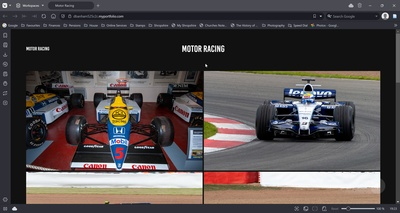

This site comprises two Portfolios and two Sub-sites.
Shropshire Photographs |
General Photographs |
||
|  |  | ||
My Portfolio of photohraphs taken around Shropshire. |
My Portfolio of general photohraphs. |
||
Click on the icons below to access the Sub-Sites.
Shropshire |
Formula 1 |
||
|  |  | ||
The Shropshire sub-site uses my photographs to explore the History of Shropshire and other items of interest relating to the county. |
The F1 Stamps sub-site uses my stamp collection to depict the History of Formula 1. |
||
Church Notes |
|||
| Church Notes | |||